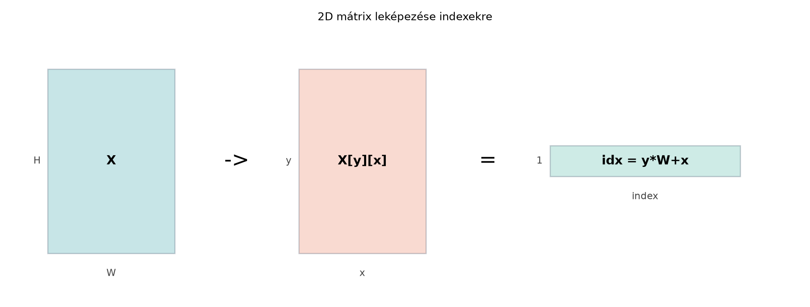

A többdimenziós indexelés a GPGPU-programozás egyik legfontosabb, ugyanakkor leggyakrabban félreértett lépése. Az 1D-s esetben egyetlen globális azonosítót számolunk, és arra hivatkozunk; 2D-s mátrixoknál, képeknél vagy 3D-s térfogatoknál azonban a természetes gondolkodásmód a sor–oszlop, illetve a réteg–sor–oszlop koordinátarendszer. A CUDA, az OpenCL és a JAX/XLA egyaránt lehetővé teszi, hogy a hardverrácsot többdimenziósként adjuk meg, így a kernelkód közelebb marad a matematikai modellhez. Ebben az alfejezetben a 2D- és 3D-leképezést, a row-major és column-major memóriaelrendezést, a határkezelést és a paddinget dolgozzuk ki. A cél nem csupán a képletek ismerete, hanem az, hogy bármilyen rács–memória leképezést tudatosan, a határokat és a tényleges memóriacímeket ellenőrizve tudj tervezni.

Képfeldolgozásnál, mátrixműveleteknél vagy
végesdifferencia-módszereknél a bemenet leggyakrabban egy
méretű, soronként folytonosan tárolt tömb. A CUDA-ban a kernel
indításakor a rácsot és a blokkot is legfeljebb háromdimenziós
dim3 típussal adhatjuk meg. Egy 2D-s munkarács esetén a
dim3 block(16, 16); például egy
szálból álló blokkot definiál, a
dim3 grid(ceiling(W/16), ceiling(H/16)); pedig egy 2D-s
blokkgrácsot. A kernel törzsében a szál globális koordinátája:
int ix = blockIdx.x * blockDim.x + threadIdx.x;
int iy = blockIdx.y * blockDim.y + threadIdx.y;Ezek a ix, iy értékek a logikai kép- vagy
mátrixkoordináták. A memóriában azonban a 2D-s tömb továbbra is
lineárisan, egymás után fűzött sorokként él. A C/C++ nyelvben a szokásos
elrendezés a row-major: az x (oszlop)
index a leggyorsabban változó, a sor elemei egymással szomszédosak, a
y (sor) index a lassabb. A lineáris index:
idx = iy * width + ix;Példaként egy mátrix (5 sor, 3 oszlop) memóriabeli sorrendje:
(0,0) (1,0) (2,0) (0,1) (1,1) (2,1) ...Az idx = iy * width + ix képlet ezt a sorrendet adja
vissza. Fontos, hogy itt a width a logikai szélesség, nem
feltétlenül azonos a lefoglalt sor hosszával, ha paddinget használunk;
erre hamarosan visszatérünk.
A 2D-s leképezés leggyakoribb formája egy olyan kernel, amely egy képen vagy mátrixon elemenként hajt végre műveletet. A következő CUDA C++ kernel lineáris transzformációt végez, és közben ellenőrzi a határokat:
#define CUDA_CHECK(call) \
do { \
cudaError_t err = (call); \
if (err != cudaSuccess) { \
fprintf(stderr, "CUDA error at %s:%d: %s\n", \
__FILE__, __LINE__, cudaGetErrorString(err)); \
exit(EXIT_FAILURE); \
} \
} while (0)
__global__ void scale2D_kernel(const float* __restrict__ input,
float* __restrict__ output,
int width, int height,
float alpha, float beta)
{
int ix = blockIdx.x * blockDim.x + threadIdx.x;
int iy = blockIdx.y * blockDim.y + threadIdx.y;
if (ix < width && iy < height) {
int idx = iy * width + ix; // row-major lineáris index
output[idx] = alpha * input[idx] + beta;
}
}A hostoldali indítás:
dim3 block(16, 16);
dim3 grid((width + block.x - 1) / block.x,
(height + block.y - 1) / block.y);
scale2D_kernel<<<grid, block>>>(d_in, d_out, width, height, 2.0f, 1.0f);
CUDA_CHECK(cudaDeviceSynchronize());A dim3 grid((width + block.x - 1) / block.x, ...)
kerekítés biztosítja, hogy a rács lefedje a teljes tartományt akkor is,
ha a szélesség nem osztható a blokkszélességgel. A kernelben a
if (ix < width && iy < height) feltétel
azokra a szálakra is kiterjed, amelyek a rács szélén túlra mutatnak. Ez
a határellenőrzés nem opcionális: nélküle a szélső
blokkokban lévő felesleges szálak illegális memóriacímeket írnának vagy
olvasnának, ami jellemzően eszközhibához vezet.
A teljesítmény szempontjából a 2D-s leképezésnél arra kell ügyelni,
hogy a szomszédos threadIdx.x értékű szálak egymás melletti
ix koordinátákat kapjanak. Ha row-major elrendezést
használunk, akkor ezek a szálak egymást követő memóriacímeket érnek el,
ami támogatja a globális memória coalescingjét. Ha a kernelben
felcserélnénk a szerepeket, és a szálak x irányban a
iy koordinátát változtatnák, a memóriaelérés szétszórt
lenne, és a sávszélesség drasztikusan csökkenne. Ezért a 2D-s rácsoknál
mindig a leggyorsabban változó logikai dimenziót érdemes a
threadIdx.x-hez kötni.
A 3D-s esetben a rács és a blokk háromdimenziós dim3
típust kap. Például egy voxeles térfogat
méretű. A kernel indítása:
dim3 block(8, 8, 8); // 512 szál blokkonként
dim3 grid((width + block.x - 1) / block.x,
(height + block.y - 1) / block.y,
(depth + block.z - 1) / block.z);A globális koordináták:
int ix = blockIdx.x * blockDim.x + threadIdx.x;
int iy = blockIdx.y * blockDim.y + threadIdx.y;
int iz = blockIdx.z * blockDim.z + threadIdx.z;A row-major 3D-s memóriaelrendezésben az x a
leggyorsabban változó, az y a középső, a z a
leglassabb. A lineáris index:
idx = (iz * height + iy) * width + ix;Ez a képlet ugyanazt a logikát követi, mint a 2D-s eset: a belső
zárójel a 3D-s térfogat egy szeletén belüli sorszámot adja meg, a
iz * height pedig az előző rétegek elemeit ugroja át. A
height a teljes rétegen belüli sorok száma, a
width az egyes sorok hossza. Ha a térfogatot folytonosan
foglaltuk le, ez a linearizálás helyes.
A következő kernel például egy 3D-s voxeltranszformációt hajt végre, például egy aktiválási függvényt alkalmaz minden voxelre:
__global__ void sigmoid3D_kernel(const float* __restrict__ input,
float* __restrict__ output,
int width, int height, int depth)
{
int ix = blockIdx.x * blockDim.x + threadIdx.x;
int iy = blockIdx.y * blockDim.y + threadIdx.y;
int iz = blockIdx.z * blockDim.z + threadIdx.z;
if (ix < width && iy < height && iz < depth) {
int idx = (iz * height + iy) * width + ix;
float v = input[idx];
output[idx] = 1.0f / (1.0f + expf(-v)); // logisztikus szigmoid
}
}A határellenőrzés itt háromdimenziós: a rács szélein mindhárom
irányban lehetnek olyan szálak, amelyek a tényleges dimenzión kívülre
esnek. A
if (ix < width && iy < height && iz < depth)
feltétel mindegyiket kizárja. A feltétel kiértékelése rövidzár: ha az
ix már érvénytelen, az iy és iz
kiértékelésére nem kerül sor, így a többletköltség minimális.
A 3D-s indexelésnél különösen fontos a dimenziókorlátok ismerete. A
CUDA blokk maximális mérete szálanként 1024; a blockDim.z
tipikusan legfeljebb 64 lehet, míg blockDim.x és
blockDim.y nagyobbak lehetnek (a pontos értékek compute
capability függők, például egyes architektúrákon
x <= 1024, y <= 1024,
z <= 64, de a szorzatuk <= 1024). A griddimenzió is
korlátos: gridDim.x általában
,
gridDim.y és gridDim.z jellemzően 65535. Ha a
3D-s probléma mérete ezeket meghaladná, akkor nem elegendő egyszerűen
növelni a rácsot; ilyenkor 1D-s rácsot és a kernelben manuálisan
lebontott lineáris indexet, vagy a következő alfejezetben tárgyalandó
grid-stride loop mintát kell használni.
A memóriaelrendezés kérdése nem csak elméleti: ugyanaz a mátrix
egészen más lineáris indexelést igényel row-major és column-major
esetben. A C/C++ tömbök, és így a CUDA C++ kódok túlnyomó többsége,
row-major elrendezést használ. Ezzel szemben a cuBLAS, a LAPACK és több
tudományos könyvtár column-major elrendezést vár. A
column-major elrendezésben az oszlopok elemei vannak egymás mellett a
memóriában, tehát a y (sor) index a leggyorsabban változó.
A lineáris index:
idx = ix * height + iy; // column-majorEgy
mátrix esetén a row-major indexképlet iy * W + ix, a
column-major pedig ix * H + iy. A különbség azonnal
látszik, ha ugyanazt a mátrixot mindkét módon járjuk be: row-majorban a
belső ciklus az x-en fut, column-majorban pedig az
y-on.
A GPGPU-kódban a leggyakoribb hiba a row-major és column-major
keverése. Amikor például cuBLAS-t hívunk, és a saját row-major
mátrixunkból column-major mátrixként olvasunk, a művelet
transzponáltként viselkedhet. Ezért a könyvtári hívásoknál mindig
ellenőrizni kell a függvény dokumentációjában a tárolási sorrendet, és
szükség esetén transzponálási opciót (CUBLAS_OP_T) vagy
explicit konverziót használni.
A két elrendezés közötti választást a memória-hozzáférési minta is
befolyásolja. Ha a szálak az x irányban szomszédosak, és a
mátrixot row-majorban tároljuk, akkor a globális memóriaolvasás
koaleszkálódik. Ha column-major tárolást használnánk, a szálak az
x irányban az oszlop mentén lépkednének, ami szétszórt
címeket eredményezne. Ezért gyakori megoldás, hogy a kernel a kívánt
elrendezésnek megfelelően indexel, vagy a transzponált feladatot külön
kernelben végzi el.
A rácsos leképezés során a legtöbb gyakorlati problémánál a dimenziók
nem oszthatók a blokkmérettel. A felesleges szálak kezelésére a
if (ix < width && iy < height) típusú
feltétel szolgál. Ez a határellenőrzés biztosítja, hogy
a kernel soha ne érjen el a lefoglalt tömb határain kívülre. A
határellenőrzés hiánya a leggyakoribb CUDA-hibák közé tartozik; a hibás
kernel gyakran illegális memóriahozzáférést okoz, és a
cudaDeviceSynchronize() után
cudaErrorIllegalAddress hibát ad.
A határellenőrzés mellett a padding egy másik, gyakran használt technika. A padding azt jelenti, hogy a ténylegesen lefoglalt sor vagy réteg hosszát megnöveljük a logikai méreten túl, például azért, hogy a memóriacímek igazodjanak, vagy hogy egy szűrő a széleken is biztonságosan hozzáférjen a szomszédos elemekhez. A padding lehet zero padding (a hozzáadott elemek nullák), clamp padding (a szélső értékeket ismétli), wrap padding (a túloldalról folytatja) vagy reflect padding (a széleket tükrözi). Az alfejezet szempontjából a legfontosabb a memóriaelrendezés és az indexelés helyes kezelése.
Egy paddingelt 2D-s tömb esetén a memóriában a sor hossza nagyobb,
mint a logikai width. A tényleges sorhosszt gyakran
pitch-nek vagy ldA-nak (leading dimension)
nevezik. A lineáris index ilyenkor:
idx = iy * ldA + ix;ahol ldA >= width. A korábban használt
idx = iy * width + ix csak akkor helyes, ha nincs padding.
A cudaMallocPitch és a cudaMemcpy2D API-k pontosan azért léteznek, hogy
a paddingelt sorokkal kényelmesen lehessen dolgozni; a kernelnek mindig
a tényleges pitch értéket kell megkapnia.
A paddingnek a határkezelésben is szerepe van. Ha például egy -as szűrőt akarunk alkalmazni egy képre, a szélső pixeleknél a kernelnek a szomszédos, de a képen kívüli elemeket is el kellene érnie. Az egyik megoldás, hogy a bemeneti képet megnövelt méretben, egy pixeles zero paddinggel foglaljuk le, és a belső régióba másoljuk az eredeti adatokat. Ekkor a kernelben a 2D-s indexelés a paddingelt tömbhöz igazodik:
__global__ void copyPadded2D_kernel(const float* __restrict__ input,
float* __restrict__ output,
int inWidth, int inHeight,
int outWidth, int outHeight,
int padX, int padY)
{
int ox = blockIdx.x * blockDim.x + threadIdx.x;
int oy = blockIdx.y * blockDim.y + threadIdx.y;
if (ox < outWidth && oy < outHeight) {
int ix = ox - padX;
int iy = oy - padY;
float val = 0.0f; // zero padding
if (ix >= 0 && ix < inWidth && iy >= 0 && iy < inHeight) {
val = input[iy * inWidth + ix];
}
output[oy * outWidth + ox] = val;
}
}Ebben a mintában a kimeneti tömb a kibővített, paddingelt rácsot fedi
le. A szálak az ox, oy kimeneti koordinátákat
számítják, majd visszaállítják a bemeneti koordinátákat
ix = ox - padX, iy = oy - padY. Ha az így
kapott koordináták a bemeneti tartományon belül vannak, a bemenet
megfelelő elemét másoljuk; különben nullát írunk. Ez a zero
padding explicit megvalósítása. A
copyPadded2D_kernel nem használ shared memóriát vagy
tilinget, mert azok a későbbi fejezetek témái; itt kizárólag a
többdimenziós indexelés és a határok helyes kezelése a cél.
3D-s esetben a padding ugyanígy működik, csak a harmadik dimenzióval bővül. Például egy térfogathoz padding esetén a ténylegesen lefoglalt dimenziók lehetnek. A lineáris index a paddingelt dimenziókkal:
idx = (oz * outHeight + oy) * outWidth + ox;A bemeneti koordináták visszaszámítása pedig
ix = ox - padX; iy = oy - padY; iz = oz - padZ;. A
határellenőrzés minden dimenzióban elvégzendő.
A többdimenziós indexelés során a leggyakoribb hibák a következők.
1. Elfelejtett határellenőrzés. Ha a szélesség vagy
magasság nem osztható a blokkmérettel, az utolsó blokkban lévő egyes
szálak a lefoglalt tömbön kívülre mutatnak. A kernelben minden
dimenzióra ix < width, iy < height
típusú feltételt kell írni, mielőtt a memóriához nyúlunk. A hiányzó
feltétel gyakran csak bizonyos bemeneti méreteknél okoz hibát, ami
megnehezíti a reprodukálást.
2. A valódi szélesség és a rács szélességének összekeverése. A lineáris index kiszámításánál sokan ezt írják:
int idx = iy * (blockDim.x * gridDim.x) + ix; // HELYTELENEz a képlet azt feltételezi, hogy a sor hossza megegyezik a rács
által lefedett szélességtel, ami csak akkor igaz, ha a szélesség
pontosan osztható, és nincs padding. A helyes szélesség a tényleges
width, illetve padding esetén a pitch vagy
ldA. Ezért a kernel mindig kapja meg a tényleges
memóriabeli sorhosszt, és azt használja a linearizáláshoz.
3. blockIdx és threadIdx
keverése. Gyakori hiba, ha valaki
ix = threadIdx.x * blockDim.x + blockIdx.x;-et ír. Ez a
szorzás felcserélése miatt teljesen rossz indexet ad. A helyes képlet:
blockIdx.x * blockDim.x + threadIdx.x;. Hasonlóan ügyelni
kell arra, hogy a blockDim.y és gridDim.y ne
keveredjen a blockDim.x-szel.
4. A dimenzió sorrendjének felcserélése. A 2D-s
rácsnál a blockIdx.x az oszlophoz, a
blockIdx.y a sorhoz tartozik. Ha valaki ezt felcseréli, a
memóriaelérés szétszórt lesz, és a kép transzponáltan kerül
feldolgozásra. A 3D-s rácsnál ugyanez a hiba mindhárom tengelyen
előfordulhat.
5. Túlcsorduló integer index. Nagy 3D-s
térfogatoknál a int idx = (iz * height + iy) * width + ix;
kifejezés meghaladhatja a 32 bites int tartományát
().
Ha például egy
float tömbünk van, a lineáris index eléri a
értéket, ami nem fér int-be. Ilyenkor a lineáris index
típusát size_t-re, vagy legalább 64 bites egészre kell
cserélni.
6. Padding esetén a logikai szélesség használata a tényleges
helyett. Amikor cudaMallocPitch-et használunk, a
visszaadott pitch nagyobb lehet, mint a logikai szélesség.
A kernelben a idx = iy * width + ix helyett
idx = iy * pitch + ix-et kell használni. Ha a
width-et adjuk át, a kernel a paddingelt sorokban rossz
helyre fog írni, ami adatkorrupcióhoz vezet.
Egy jellegzetesen hibás minta és a javított változat:
// HIBÁS: nincs határellenőrzés, és width helyett blockDim.x * gridDim.x
__global__ void bad_scale2D_kernel(const float* input, float* output,
int width, int height)
{
int ix = blockIdx.x * blockDim.x + threadIdx.x;
int iy = blockIdx.y * blockDim.y + threadIdx.y;
int idx = iy * (blockDim.x * gridDim.x) + ix; // rossz sorhossz
output[idx] = 2.0f * input[idx] + 1.0f;
}
// JAVÍTOTT: tényleges width, határellenőrzéssel
__global__ void good_scale2D_kernel(const float* input, float* output,
int width, int height)
{
int ix = blockIdx.x * blockDim.x + threadIdx.x;
int iy = blockIdx.y * blockDim.y + threadIdx.y;
if (ix < width && iy < height) {
int idx = iy * width + ix;
output[idx] = 2.0f * input[idx] + 1.0f;
}
}A hibás kernel a kimeneti tömbön kívülre írhat, különösen akkor, ha a
szélesség nem többszöröse a blockDim.x * gridDim.x-nek,
vagy ha a gridDim.x valóban nagyobb, mint a tényleges
szélesség. A javított változat mindkét problémát kiküszöböli.
Ez a labor a többdimenziós indexelés gyakorlását szolgálja. Két feladatot valósítunk meg: egy 2D-s mátrix lineáris transzformációját, és egy 3D-s térfogat elemenkénti szigmoid transzformációját. A labor elvégzéséhez CUDA C++ kernel, OpenCL kernel és JAX változat tartozik. A következő kódok fordíthatók, de a labor futtatása előtt minden környezetben ellenőrizni kell a GPU-, driver- és CUDA-verziót. Az alábbi mérési naplóban szereplő értékek példaértékűek, nem valós mérésből származnak, ezért azokat a saját futtatás során le kell cserélni.
A 2D kernel:
// fordítás: nvcc -O3 -arch=native gpu019_2d.cu -o gpu019_2d
#include <cstdio>
#include <cstdlib>
#include <cmath>
#define CUDA_CHECK(call) \
do { \
cudaError_t err = (call); \
if (err != cudaSuccess) { \
fprintf(stderr, "CUDA error at %s:%d: %s\n", \
__FILE__, __LINE__, cudaGetErrorString(err)); \
exit(EXIT_FAILURE); \
} \
} while (0)
__global__ void scale2D_kernel(const float* __restrict__ input,
float* __restrict__ output,
int width, int height,
float alpha, float beta)
{
int ix = blockIdx.x * blockDim.x + threadIdx.x;
int iy = blockIdx.y * blockDim.y + threadIdx.y;
if (ix < width && iy < height) {
int idx = iy * width + ix;
output[idx] = alpha * input[idx] + beta;
}
}
int main()
{
const int width = 1920;
const int height = 1080;
const float alpha = 2.0f;
const float beta = 1.0f;
size_t bytes = (size_t)width * height * sizeof(float);
float *h_in = (float*)malloc(bytes);
float *h_out = (float*)malloc(bytes);
for (int i = 0; i < width * height; ++i) {
h_in[i] = (float)(i % 1000) / 1000.0f;
}
float *d_in, *d_out;
CUDA_CHECK(cudaMalloc(&d_in, bytes));
CUDA_CHECK(cudaMalloc(&d_out, bytes));
CUDA_CHECK(cudaMemcpy(d_in, h_in, bytes, cudaMemcpyHostToDevice));
dim3 block(16, 16);
dim3 grid((width + block.x - 1) / block.x,
(height + block.y - 1) / block.y);
// warm-up
scale2D_kernel<<<grid, block>>>(d_in, d_out, width, height, alpha, beta);
CUDA_CHECK(cudaDeviceSynchronize());
// mérés: legalább 5 ismétlés; az alábbi egyetlen ismétlést szemléltet
scale2D_kernel<<<grid, block>>>(d_in, d_out, width, height, alpha, beta);
CUDA_CHECK(cudaDeviceSynchronize());
CUDA_CHECK(cudaMemcpy(h_out, d_out, bytes, cudaMemcpyDeviceToHost));
// ellenőrzés CPU-n
double max_err = 0.0;
for (int iy = 0; iy < height; ++iy) {
for (int ix = 0; ix < width; ++ix) {
int idx = iy * width + ix;
float expected = alpha * h_in[idx] + beta;
double err = fabs((double)h_out[idx] - expected);
if (err > max_err) max_err = err;
}
}
printf("Max error: %g\n", max_err);
CUDA_CHECK(cudaFree(d_in));
CUDA_CHECK(cudaFree(d_out));
free(h_in);
free(h_out);
return 0;
}A 3D kernel:
// fordítás: nvcc -O3 -arch=native gpu019_3d.cu -o gpu019_3d
#include <cstdio>
#include <cstdlib>
#include <cmath>
#define CUDA_CHECK(call) \
do { \
cudaError_t err = (call); \
if (err != cudaSuccess) { \
fprintf(stderr, "CUDA error at %s:%d: %s\n", \
__FILE__, __LINE__, cudaGetErrorString(err)); \
exit(EXIT_FAILURE); \
} \
} while (0)
__global__ void sigmoid3D_kernel(const float* __restrict__ input,
float* __restrict__ output,
int width, int height, int depth)
{
int ix = blockIdx.x * blockDim.x + threadIdx.x;
int iy = blockIdx.y * blockDim.y + threadIdx.y;
int iz = blockIdx.z * blockDim.z + threadIdx.z;
if (ix < width && iy < height && iz < depth) {
int idx = (iz * height + iy) * width + ix;
float v = input[idx];
output[idx] = 1.0f / (1.0f + expf(-v));
}
}
int main()
{
const int width = 128;
const int height = 128;
const int depth = 64;
size_t bytes = (size_t)width * height * depth * sizeof(float);
float *h_in = (float*)malloc(bytes);
float *h_out = (float*)malloc(bytes);
for (int i = 0; i < width * height * depth; ++i) {
h_in[i] = ((float)(i % 200) - 100.0f) / 100.0f;
}
float *d_in, *d_out;
CUDA_CHECK(cudaMalloc(&d_in, bytes));
CUDA_CHECK(cudaMalloc(&d_out, bytes));
CUDA_CHECK(cudaMemcpy(d_in, h_in, bytes, cudaMemcpyHostToDevice));
dim3 block(8, 8, 8);
dim3 grid((width + block.x - 1) / block.x,
(height + block.y - 1) / block.y,
(depth + block.z - 1) / block.z);
// warm-up
sigmoid3D_kernel<<<grid, block>>>(d_in, d_out, width, height, depth);
CUDA_CHECK(cudaDeviceSynchronize());
sigmoid3D_kernel<<<grid, block>>>(d_in, d_out, width, height, depth);
CUDA_CHECK(cudaDeviceSynchronize());
CUDA_CHECK(cudaMemcpy(h_out, d_out, bytes, cudaMemcpyDeviceToHost));
double max_err = 0.0;
for (int iz = 0; iz < depth; ++iz) {
for (int iy = 0; iy < height; ++iy) {
for (int ix = 0; ix < width; ++ix) {
int idx = (iz * height + iy) * width + ix;
float expected = 1.0f / (1.0f + expf(-h_in[idx]));
double err = fabs((double)h_out[idx] - expected);
if (err > max_err) max_err = err;
}
}
}
printf("Max error: %g\n", max_err);
CUDA_CHECK(cudaFree(d_in));
CUDA_CHECK(cudaFree(d_out));
free(h_in);
free(h_out);
return 0;
}A CUDA-kódokban a hibakezelés makró minden API-hívást ellenőriz. A
mérés előtt warm-up fut, a szinkronizáció
cudaDeviceSynchronize() biztosítja a kernel befejezését. A
kernelindításoknál a shared memory és a stream alapértelmezett (0),
ezért a teljes alak <<<grid, block>>>
helyett a könyv konvenciója szerinti
<<<grid, block, 0, 0>>> is használható;
itt az egyszerűség kedvéért a rövid alak szerepel.
Az OpenCL 2D-s kernel ugyanazt a feladatot valósítja meg:
// fordítás: g++ -O2 gpu019_2d_opencl.cpp -lOpenCL -o gpu019_2d_opencl
// kernel: scale2D_kernel.cl
__kernel void scale2D_kernel(__global const float* input,
__global float* output,
int width, int height,
float alpha, float beta)
{
int ix = get_global_id(0);
int iy = get_global_id(1);
if (ix < width && iy < height) {
int idx = iy * width + ix;
output[idx] = alpha * input[idx] + beta;
}
}Az OpenCL-ben a rácsdimenziókat a clEnqueueNDRangeKernel
hívásnál adjuk meg, a global_work_size például
{1920, 1080}, a local_work_size
{16, 16} lehet. A kernelben a get_global_id(0)
felel meg a blockIdx.x * blockDim.x + threadIdx.x
kifejezésnek, a get_global_id(1) pedig az
iy-nek. A határellenőrzés ugyanúgy szükséges, mert a
global_work_size itt is lehet nagyobb, mint a tényleges
méret.
A 3D-s OpenCL kernel:
__kernel void sigmoid3D_kernel(__global const float* input,
__global float* output,
int width, int height, int depth)
{
int ix = get_global_id(0);
int iy = get_global_id(1);
int iz = get_global_id(2);
if (ix < width && iy < height && iz < depth) {
int idx = (iz * height + iy) * width + ix;
float v = input[idx];
output[idx] = 1.0f / (1.0f + exp(-v));
}
}Az OpenCL-ben a 3D-s global_work_size
{128, 128, 64}, a local_work_size
{8, 8, 8} lehet. A kernel hívásakor a
clSetKernelArg függvénnyel adjuk át a dimenziókat, és a
memóriaobjektumokat clCreateBuffer hozza létre.
A JAX deklaratív, funkcionális modelljében nem írunk explicit kernelindexelést. A 2D- és 3D-s transzformációt egyszerű függvényekkel írjuk le, és a JAX/XLA automatikusan párhuzamosítja a rendelkezésre álló eszközön:
# JAX (CPU/GPU/TPU)
import jax
import jax.numpy as jnp
def scale2d(x, alpha, beta):
return alpha * x + beta
def sigmoid3d(x):
return jax.nn.sigmoid(x)
# Példa bemenetek
x2 = jnp.ones((1080, 1920), dtype=jnp.float32)
y2 = scale2d(x2, 2.0, 1.0) # (1080, 1920) alakú
x3 = jnp.ones((64, 128, 128), dtype=jnp.float32)
y3 = sigmoid3d(x3) # (64, 128, 128) alakú
# JIT fordítás és futtatás
fast_scale = jax.jit(scale2d)
fast_sigmoid = jax.jit(sigmoid3d)
y2 = fast_scale(x2, 2.0, 1.0)
y3 = fast_sigmoid(x3)A JAX esetén a határellenőrzést a tömb alakja automatikusan
garantálja, a paddinget pedig a jnp.pad függvénnyel lehet
kifejezni. A JAX-kódban nincs explicit
blockIdx/threadIdx, így a téma gyakorlásához a
CUDA és OpenCL változatok a mérvadók; a JAX-példa azt mutatja, hogy a
deklaratív modellben ugyanaz a matematikai művelet hogyan írható le.
Az alábbi napló sablon. A benne szereplő számok nem valós mérésből származnak, ezért a labor elvégzésekor minden mezőt a saját környezetnek megfelelően kell kitölteni.
| Mező | 2D mátrixkernel | 3D térfogatkernel |
|---|---|---|
| GPU modell | (példa) NVIDIA A100 40 GB | (példa) NVIDIA A100 40 GB |
| Driver | (példa) 535.104.05 | (példa) 535.104.05 |
| CUDA verzió | (példa) 12.2 | (példa) 12.2 |
| Compute capability | (példa) 8.0 | (példa) 8.0 |
| Blokkméret | (16,16) |
(8,8,8) |
| Rácsméret | (120,68) |
(16,16,8) |
| Bemenet | 1920x1080 float32 |
128x128x64 float32 |
| Precision | FP32 | FP32 |
| Warm-up | 1 futtatás | 1 futtatás |
| Ismétlések | 5 (itt példa) | 5 (itt példa) |
| Várt eredmény | alpha*x + beta |
sigmoid(x) |
| Mért max. hiba | (nem futtatott) | (nem futtatott) |
| Futásidő | (nem futtatott) | (nem futtatott) |
| Átbocsátóképesség | (nem futtatott) | (nem futtatott) |
Az átadandó eredményhez a labor során a tényleges futtatás után ki
kell tölteni a „Mért max. hiba”, „Futásidő” és „Átbocsátóképesség”
mezőket, valamint csatolni kell a nsys vagy
ncu profilozási kimenetet, ha rendelkezésre áll. A mérés
előtt legalább 5–10 ismétlést kell végezni, és az átlag mellett a
szórást vagy percentilist is közölni kell. A jelen alfejezetben szereplő
kódok futtatása nélkül nem állítható, hogy az adott GPU-n milyen
teljesítményt nyújtanak.
Adott egy
méretű kép, a blokkméret (16,16). Számítsd ki a rács
dimenzióit, és írd fel a globális indexeket és a határellenőrzést. Mi
történik, ha a if (ix < width && iy < height)
feltételt kihagyjuk?
Válasz: A rács dimenziói
(ceil(1920/16), ceil(1080/16)) = (120, 68), mert
,
tehát 68 blokk kell. A globális indexek:
ix = blockIdx.x * 16 + threadIdx.x;
iy = blockIdx.y * 16 + threadIdx.y;A határellenőrzés
if (ix < 1920 && iy < 1080). Ha a feltételt
kihagyjuk, a szélső blokkokban a 120. oszlopblokk 120–127.
ix értékei (és a 68. sorblokk 1080–1087. iy
értékei) a lefoglalt tömbön kívülre mutatnak. Az ilyen szálak illegális
memóriát írnak/olvasnak, ami cudaErrorIllegalAddress hibát,
adatkorrupciót vagy a kernel leállását okozhatja. Ezért a
határellenőrzés minden olyan kernelben kötelező, ahol a rács nagyobb,
mint a tényleges adattartomány.
A többdimenziós indexelés elsajátítása után a következő lépés a grid-stride loop és a perzisztens kernelek megértése, amelyek akkor válnak szükségessé, ha a probléma mérete meghaladja a hardverrács maximális méretét, vagy ha egyszerre akarunk nagyobb adatokat feldolgozni kevesebb kernelindítással. Az itt bemutatott 2D/3D leképezés, row-major/column-major megkülönböztetés és határkezelés azonban minden későbbi optimalizálás alapja marad.